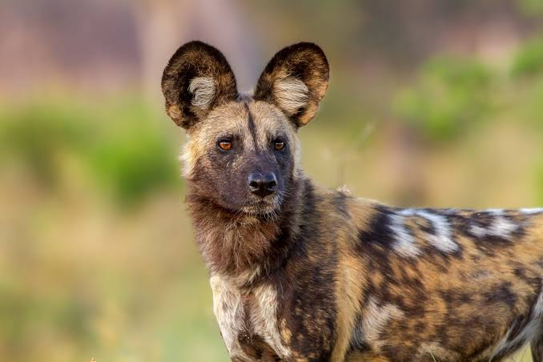

.jpg)
.jpg)
1. Habitat and Lifestyle
African wild dogs, scientifically known as Lycaon pictus, are among the most fascinating predators found in sub-Saharan Africa. They are easily recognized by their colorful coats, which feature unique patterns of black, white, yellow, and brown fur. Unlike many other wild animals, every African wild dog has a distinct coat pattern, making each individual easily identifiable. They are highly social animals that depend on teamwork, communication, and cooperation to survive in their natural environment.
2. Hunting Behavior
African wild dogs are highly skilled hunters known for their remarkable teamwork and endurance. They usually hunt in groups, using coordinated movements to chase and capture their prey. Their main food sources include impalas, gazelles, young wildebeests, and other medium-sized animals. Instead of relying entirely on strength, they use speed, stamina, and cooperation to exhaust their prey. Wild dogs often hunt during the early morning and late afternoon when temperatures are cooler, allowing them to conserve energy while searching for food.
4. Reproduction and Care for Young Ones
Reproduction and parenting are important aspects of African wild dog behaviour. Usually, only the dominant breeding pair in a pack produces puppies. The mother gives birth in a den, where the young remain protected during their early stages of development. However, caring for the puppies is not the responsibility of the mother alone. Other members of the pack help protect them, bring food, and provide attention. Adult wild dogs may even regurgitate food for puppies and other pack members, demonstrating their strong sense of cooperation and family responsibility.
5. Territorial Behaviour and Survival Challenges
African wild dogs require large territories to find enough food and suitable places to raise their young. They regularly move across their territories while searching for prey and avoiding competition with other large predators such as lions and hyenas. They also use scent marking and vocal communication to maintain contact with other pack members and establish territorial boundaries. Unfortunately, these animals face serious survival challenges, including habitat destruction, road accidents, diseases, and conflicts with humans. Conservation efforts are therefore essential to protect their populations and ensure that future generations can continue to experience these remarkable animals.
6. Conclusion
African wild dogs are remarkable animals whose survival depends heavily on teamwork, communication, and strong social relationships. Their unique hunting techniques, cooperative parenting, and organized pack structures make them one of the most interesting predators in the African wilderness. Despite facing numerous threats, they continue to play an important role in maintaining the balance of their ecosystems by controlling prey populations. Protecting their natural habitats and supporting wildlife conservation initiatives are essential steps towards ensuring that African wild dogs do not disappear from the wild.

3. Social Behaviour and Communication
African wild dogs have a strong social structure and live in groups known as packs. Members of a pack develop close relationships and depend on one another for protection, hunting, and survival. They communicate through different sounds, including squeaks, whines, and high-pitched calls. They also use body movements, facial expressions, and physical contact to express emotions and maintain relationships. Unlike many other predators, wild dogs demonstrate remarkable cooperation, often showing affection and support towards weaker or injured members of their group.